Candidate List 20260619 Previous Day Next Day Section 1: New Sources (age<1d) Cosmological Afterglow
Section 2: Old (1-5d) sources observed last night placeholder
Section 1: New Afterglow/FBOT Cands Last Night (2)
1. ZTF26abcqcat (Afterglow?) [Back to Top] [Share] [Trigger Swift] [Fritz ] [Lasair ]RA, Dec: 234.91827, 10.21716 15h39m40.38s, 10d13m1.77sGalactic (l, b): 18.04033, 46.98562 ext(g-r) = 0.049LegacySurvey: 1 sources in 3 arcsec Closest: d = 2.69 arcsec, 186.6 deg (east of north) photoz=0.07 (68% bounds 0.03, 0.14), type=SER peak abs mag = -17.57 (68% bounds -15.48, -19.21) Consistent with synchrotron, g-r>0!
2. ZTF26abcsbfe (Afterglow?) [Back to Top] [Share] [Trigger Swift] [Fritz ] [Lasair ]RA, Dec: 268.48647, 1.18265 17h53m56.75s, 1d10m57.55sGalactic (l, b): 27.34156, 13.3141 ext(g-r) = 0.468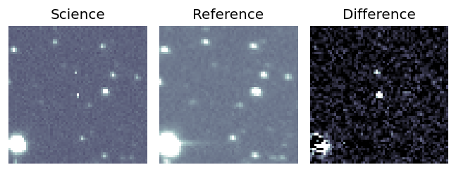
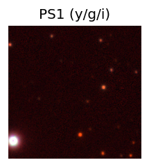
PS1: 1 source in 3 arcsec Closest: d = 7.06 arcsec photoz=0.87+/-0.43 peak abs mag = -25.34 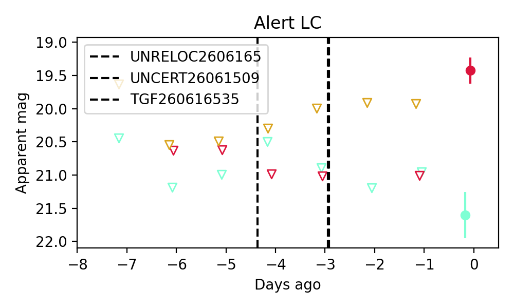
Consistent with synchrotron, g-r>0!
Section 2: Older Sources Observed Last Night (20)
0. ZTF26abbjzrw (FBOT?) [Back to Top] [Share] [Trigger Swift] [Fritz ] [Lasair ]RA, Dec: 311.73672, -9.38138 20h46m56.81s, -9d-22m-52.99sGalactic (l, b): 37.70853, -29.89323 ext(g-r) = 0.075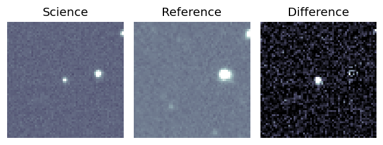
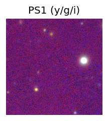
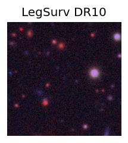
LegacySurvey: 1 sources in 3 arcsec Closest: d = 0.07 arcsec, 214.3 deg (east of north) photoz=1.19 (68% bounds 0.96, 1.57), type=REX peak abs mag = -26.31 (68% bounds -25.74, -27.04) 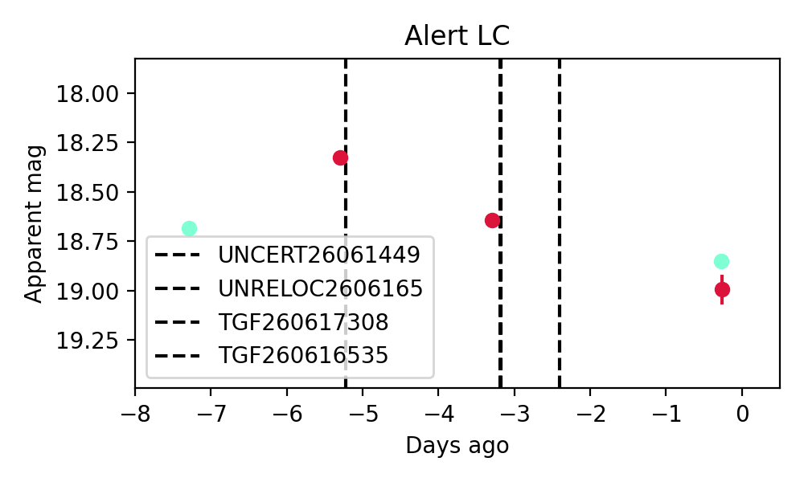
1. ZTF26abblqfy (Afterglow?) [Back to Top] [Share] [Trigger Swift] [Fritz ] [Lasair ]RA, Dec: 243.79434, 42.68999 16h15m10.64s, 42d41m23.96sGalactic (l, b): 67.43099, 46.17283 ext(g-r) = 0.017peak abs mag = -18.22 peak abs mag = -18.22 LegacySurvey: 1 sources in 3 arcsec Closest: d = 5.65 arcsec, 69.1 deg (east of north) photoz=0.05 (68% bounds 0.04, 0.06), type=SER peak abs mag = -17.75 (68% bounds -17.15, -18.27) Consistent with synchrotron, g-r>0!
2. ZTF26abbomsg (Afterglow?) [Back to Top] [Share] [Trigger Swift] [Fritz ] [Lasair ]RA, Dec: 325.48272, -6.17633 21h41m55.85s, -6d-10m-34.78sGalactic (l, b): 49.03802, -40.40886 ext(g-r) = 0.04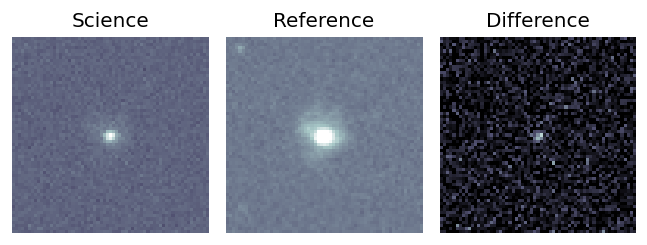
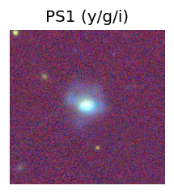
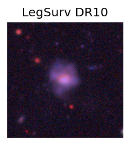
peak abs mag = -18.24 peak abs mag = -18.83 LegacySurvey: 1 sources in 3 arcsec Closest: d = 0.75 arcsec, 50.1 deg (east of north) photoz=0.11 (68% bounds 0.08, 0.13), type=SER peak abs mag = -19.24 (68% bounds -18.57, -19.62) 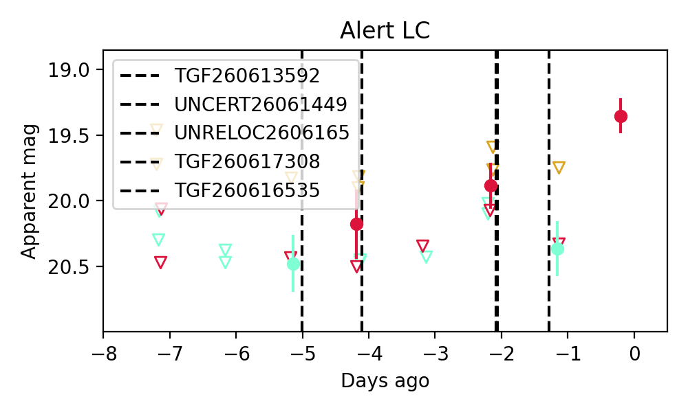
Consistent with synchrotron, g-r>0!
3. ZTF26abcbqux (FBOT?) [Back to Top] [Share] [Trigger Swift] [Fritz ] [Lasair ]RA, Dec: 350.42573, -6.14165 23h21m42.17s, -6d-8m-29.93sGalactic (l, b): 73.41274, -60.07713 WARNING: -1.86 deg from ecliptic plane ext(g-r) = 0.052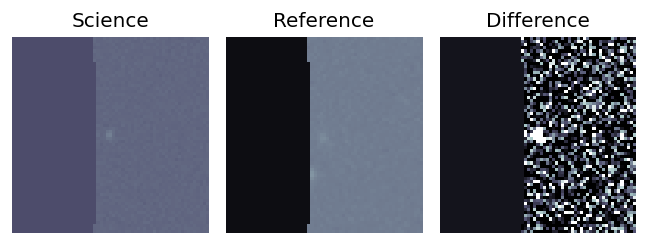
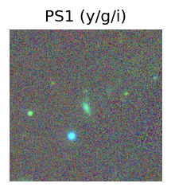
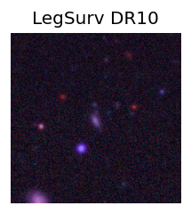
peak abs mag = -20.23 LegacySurvey: 1 sources in 3 arcsec Closest: d = 1.22 arcsec, 172.9 deg (east of north) photoz=0.2 (68% bounds 0.16, 0.23), type=SER peak abs mag = -20.58 (68% bounds -20.15, -21.02) 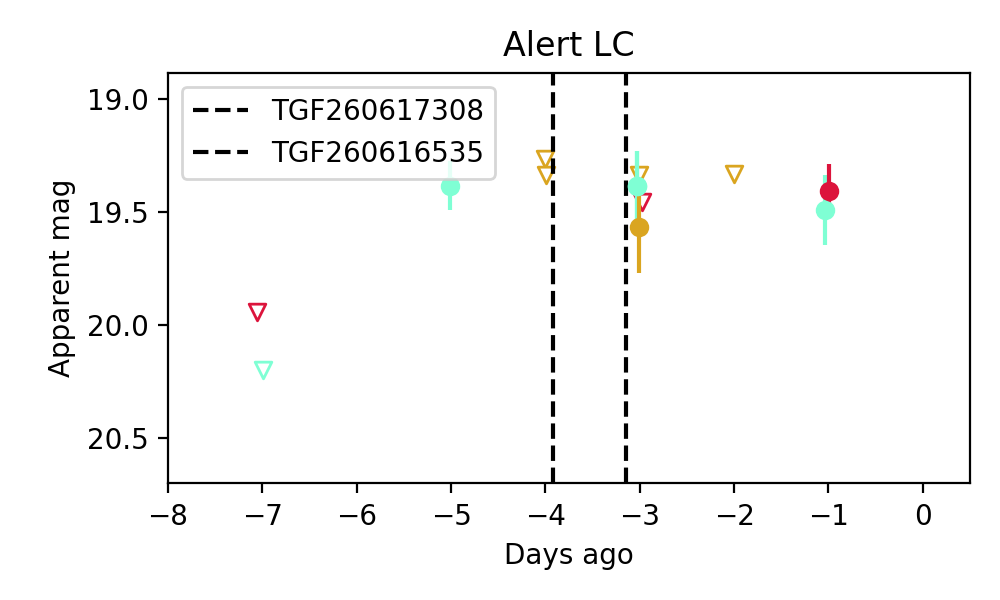
Consistent with synchrotron, g-r>0!
4. ZTF26abcddvj (Afterglow?) [Back to Top] [Share] [Trigger Swift] [Fritz ] [Lasair ]RA, Dec: 211.19355, 33.08729 14h 4m46.45s, 33d 5m14.25sGalactic (l, b): 57.98828, 73.08653 ext(g-r) = 0.016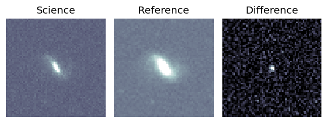
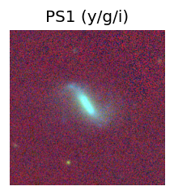
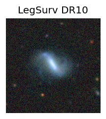
peak abs mag = -17.03 LegacySurvey: 1 sources in 3 arcsec Closest: d = 0.92 arcsec, 22.4 deg (east of north) photoz=0.03 (68% bounds 0.03, 0.04), type=SER peak abs mag = -15.92 (68% bounds -15.49, -16.31) 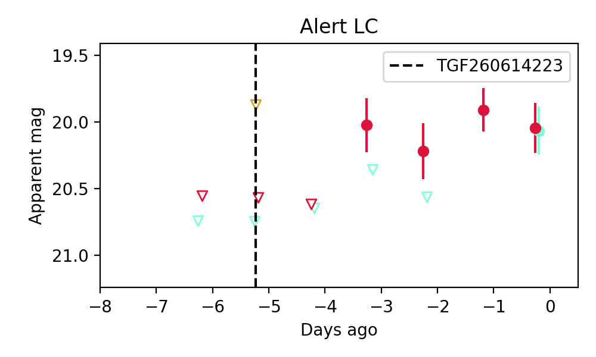
Consistent with synchrotron, g-r>0!
5. ZTF26abcfltk (FBOT?) [Back to Top] [Share] [Trigger Swift] [Fritz ] [Lasair ]RA, Dec: 263.4156, 4.37686 17h33m39.74s, 4d22m36.68sGalactic (l, b): 27.86131, 19.28074 ext(g-r) = 0.198PS1: 1 source in 3 arcsec Closest: d = 4.73 arcsec photoz=0.21+/-0.14 peak abs mag = -22.56
6. ZTF26abcgajg (Afterglow?) [Back to Top] [Share] [Trigger Swift] [Fritz ] [Lasair ]RA, Dec: 286.18668, 25.0423 19h 4m44.80s, 25d 2m32.26sGalactic (l, b): 56.8262, 8.40762 ext(g-r) = 0.34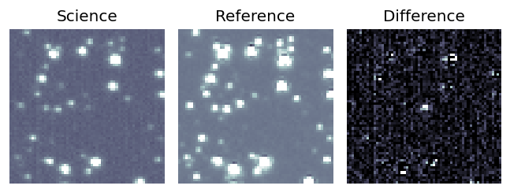
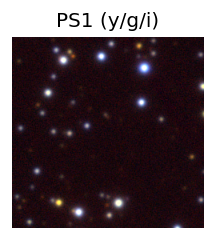
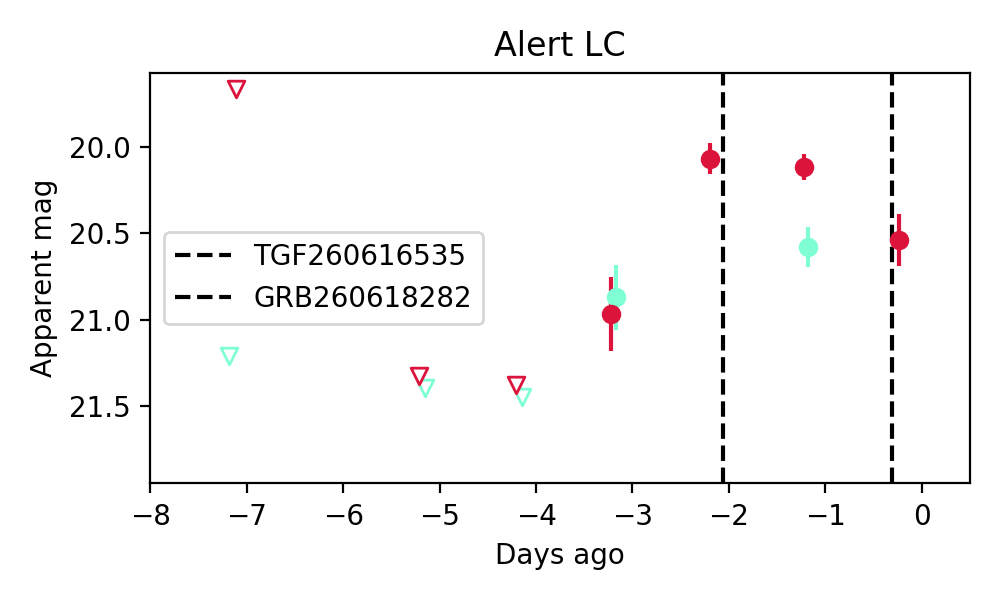
Consistent with synchrotron, g-r>0!
7. ZTF26abchgag (Afterglow?FBOT?) [Back to Top] [Share] [Trigger Swift] [Fritz ] [Lasair ]RA, Dec: 276.18926, -10.66786 18h24m45.42s, -10d-40m-4.29sGalactic (l, b): 20.40892, 0.98438 ext(g-r) = 4.323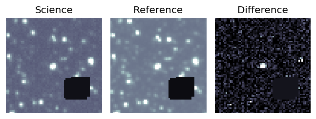
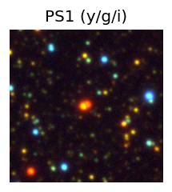
PS1: 1 source in 3 arcsec Closest: d = 0.44 arcsec photoz=0.61+/-0.36 peak abs mag = -31.47 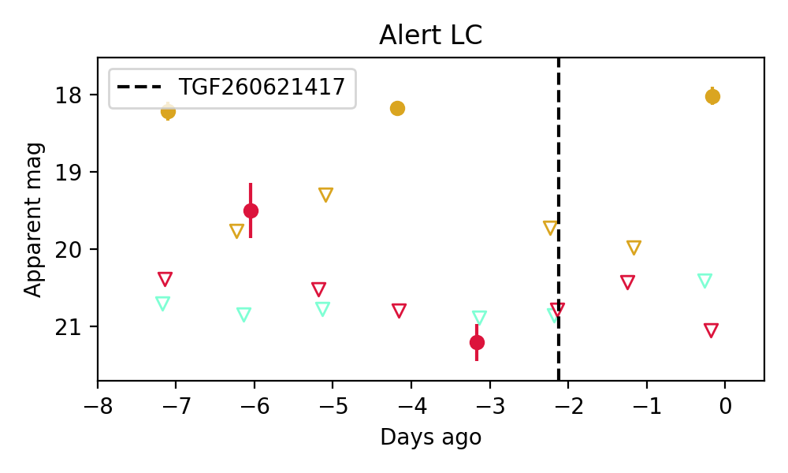
8. ZTF26abchxlu (FBOT?) [Back to Top] [Share] [Trigger Swift] [Fritz ] [Lasair ]RA, Dec: 161.43289, 25.53894 10h45m43.89s, 25d32m20.18sGalactic (l, b): 208.96583, 61.86246 ext(g-r) = 0.045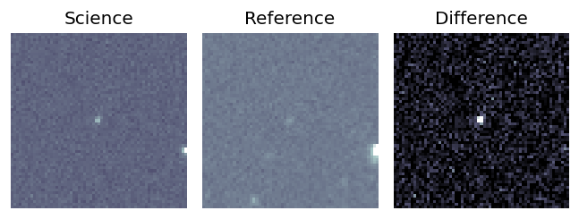
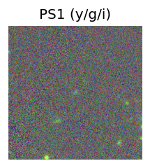
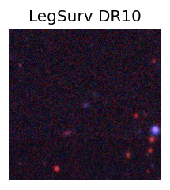
peak abs mag = -23.71 LegacySurvey: 1 sources in 3 arcsec Closest: d = 0.29 arcsec, 195.2 deg (east of north) photoz=0.41 (68% bounds 0.14, 0.8), type=EXP peak abs mag = -22.58 (68% bounds -19.9, -24.36) 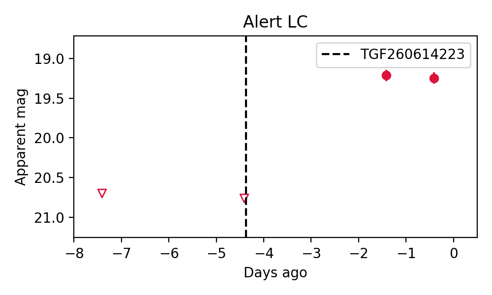
9. ZTF26abcjsxy (Afterglow?) [Back to Top] [Share] [Trigger Swift] [Fritz ] [Lasair ]RA, Dec: 272.14718, -6.94267 18h 8m35.32s, -6d-56m-33.60sGalactic (l, b): 21.81188, 6.26334 ext(g-r) = 1.274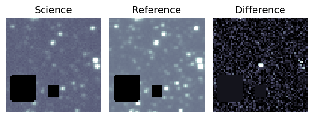
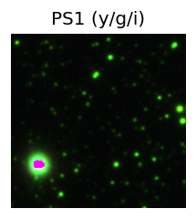
PS1: 1 source in 3 arcsec Closest: d = 3.31 arcsec photoz=0.86+/-0.06 peak abs mag = -27.13 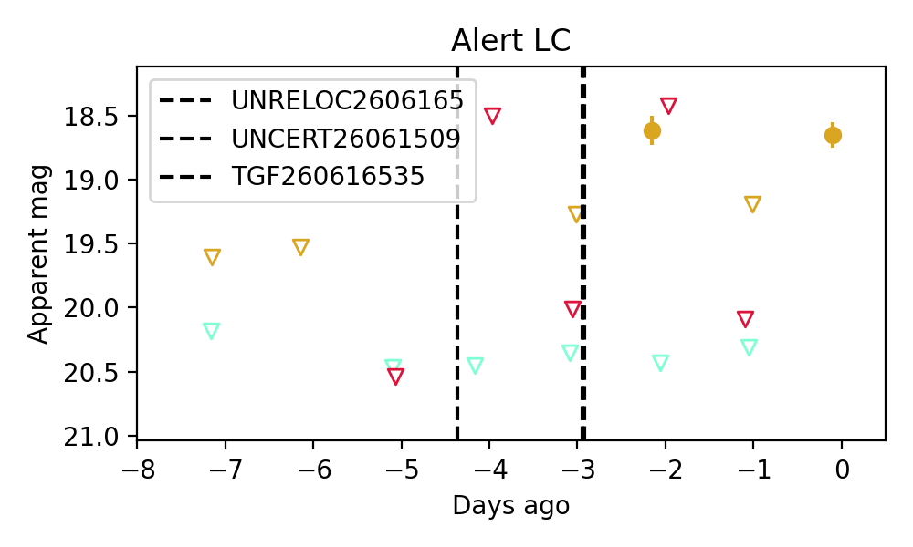
10. ZTF26abckuod (FBOT?) [Back to Top] [Share] [Trigger Swift] [Fritz ] [Lasair ]RA, Dec: 293.54955, 44.90305 19h34m11.89s, 44d54m10.97sGalactic (l, b): 77.60706, 11.82657 ext(g-r) = 0.216peak abs mag = -19.05 PS1: 1 source in 3 arcsec Closest: d = 4.47 arcsec photoz=0.18+/-0.07 peak abs mag = -20.82
11. ZTF26abclfic (FBOT?) [Back to Top] [Share] [Trigger Swift] [Fritz ] [Lasair ]RA, Dec: 324.55344, -10.63753 21h38m12.83s, -10d-38m-15.11sGalactic (l, b): 43.26448, -41.75726 WARNING: 3.29 deg from ecliptic plane ext(g-r) = 0.044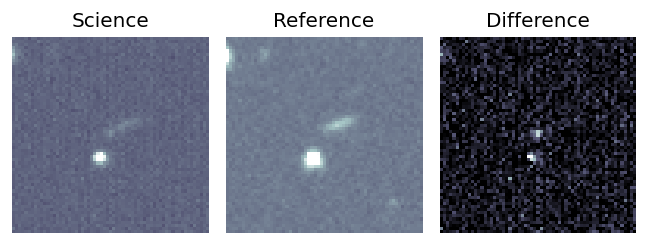
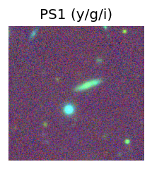
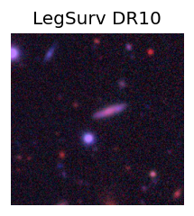
LegacySurvey: 1 sources in 3 arcsec Closest: d = 1.71 arcsec, 334.8 deg (east of north) photoz=0.16 (68% bounds 0.11, 0.21), type=EXP peak abs mag = -19.5 (68% bounds -18.5, -20.06) 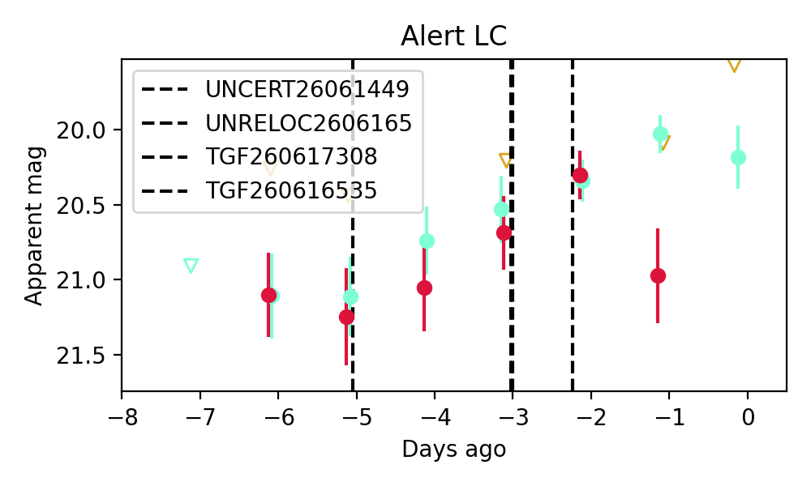
12. ZTF26abclirn (Afterglow?) [Back to Top] [Share] [Trigger Swift] [Fritz ] [Lasair ]RA, Dec: 298.52119, 3.95128 19h54m5.09s, 3d57m4.61sGalactic (l, b): 43.78313, -12.02078 ext(g-r) = 0.162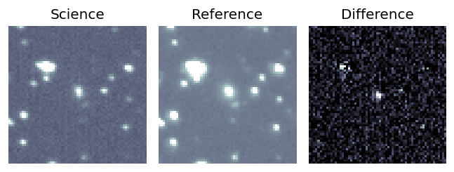
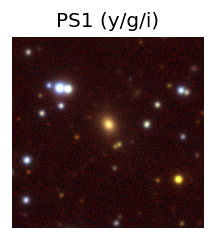
peak abs mag = -18.94 PS1: 1 source in 3 arcsec Closest: d = 0.43 arcsec photoz=0.08+/-0.00 peak abs mag = -19.01 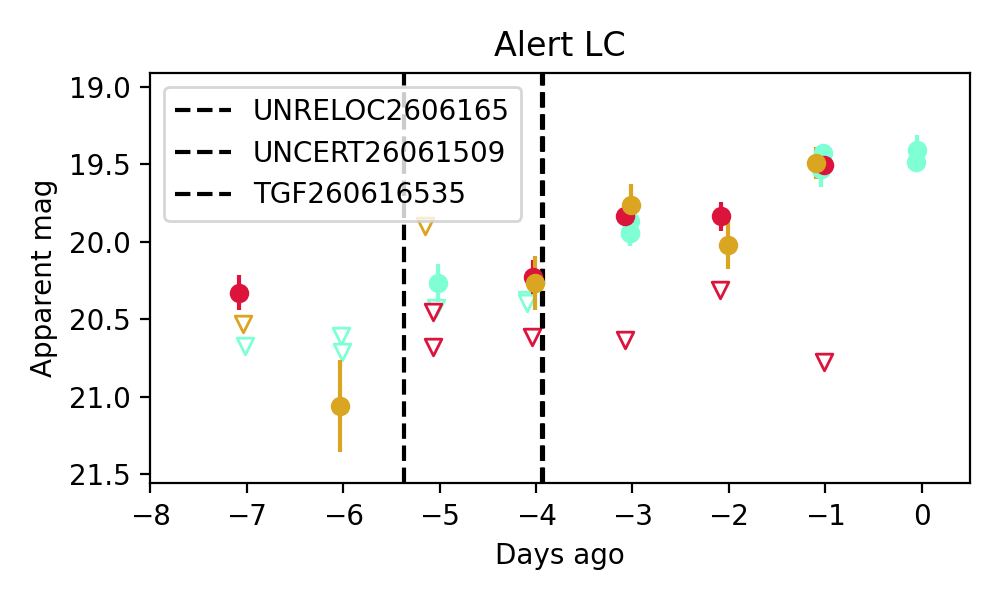
Consistent with synchrotron, g-r>0!
13. ZTF26abcqesk (Afterglow?FBOT?) [Back to Top] [Share] [Trigger Swift] [Fritz ] [Lasair ]RA, Dec: 252.31072, 55.09314 16h49m14.57s, 55d 5m35.30sGalactic (l, b): 83.40401, 39.25719 ext(g-r) = 0.015LegacySurvey: 1 sources in 3 arcsec Closest: d = 0.65 arcsec, 170.1 deg (east of north) photoz=0.37 (68% bounds 0.25, 0.54), type=REX peak abs mag = -21.5 (68% bounds -20.48, -22.47) Consistent with synchrotron, g-r>0!
14. ZTF26abcrgcv (Afterglow?) [Back to Top] [Share] [Trigger Swift] [Fritz ] [Lasair ]RA, Dec: 255.11274, 4.23857 17h 0m27.06s, 4d14m18.84sGalactic (l, b): 23.54342, 26.54591 ext(g-r) = 0.104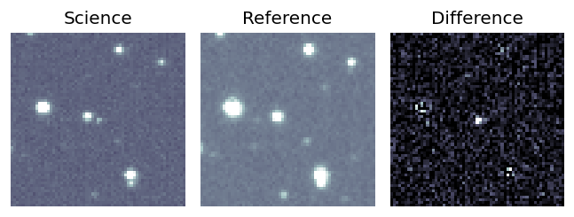
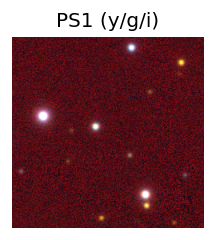
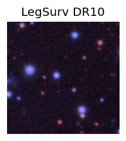
LegacySurvey: 1 sources in 3 arcsec Closest: d = 4.37 arcsec, 71.9 deg (east of north) photoz=0.03 (68% bounds 0.01, 0.11), type=PSF peak abs mag = -16.55 (68% bounds -14.22, -19.26) 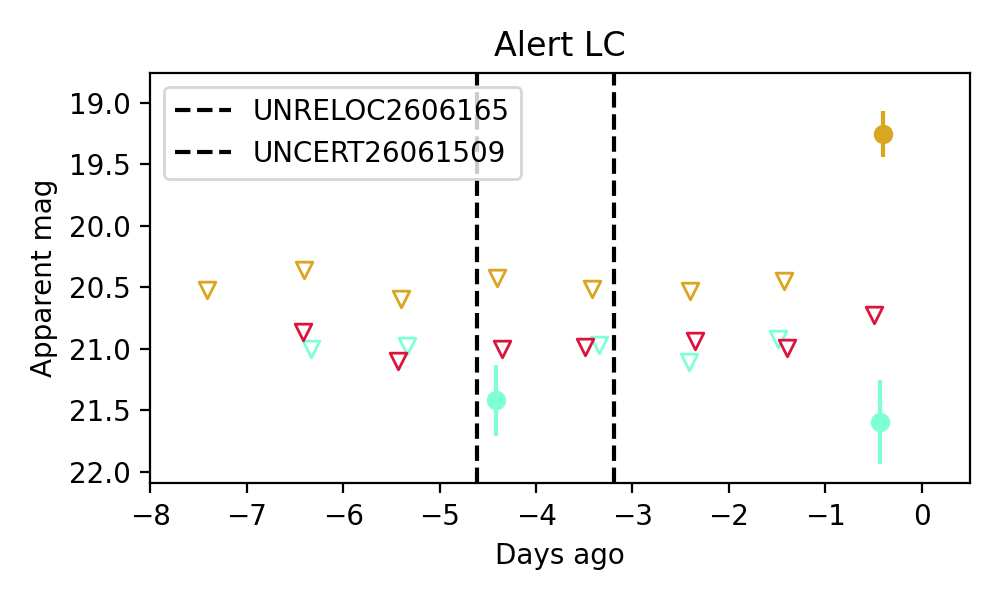
Consistent with synchrotron, g-r>0!
15. ZTF26abcrier (Afterglow?) [Back to Top] [Share] [Trigger Swift] [Fritz ] [Lasair ]RA, Dec: 266.60507, -2.85764 17h46m25.22s, -2d-51m-27.49sGalactic (l, b): 22.77125, 13.06566 ext(g-r) = 0.791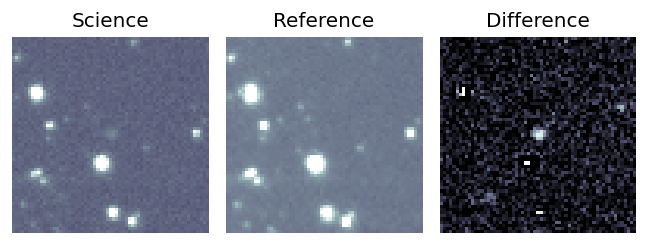
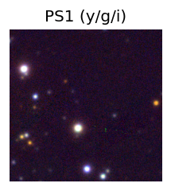
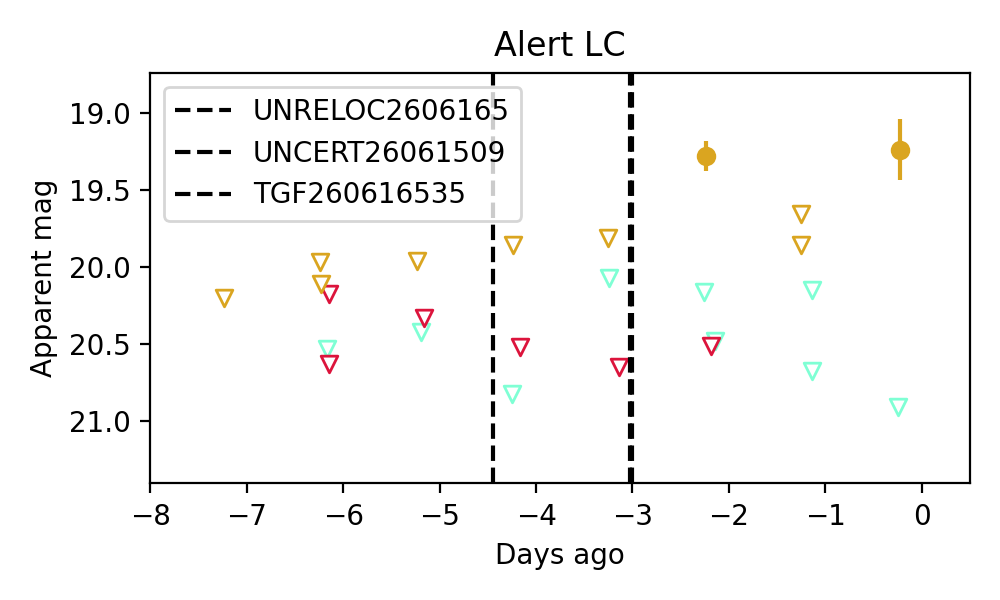
16. ZTF26abcrogc (FBOT?) [Back to Top] [Share] [Trigger Swift] [Fritz ] [Lasair ]RA, Dec: 336.18628, -1.98784 22h24m44.71s, -1d-59m-16.22sGalactic (l, b): 62.20807, -46.81994 ext(g-r) = 0.084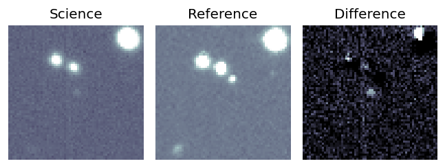
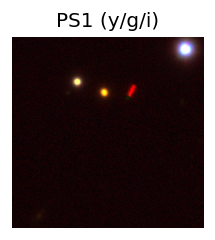
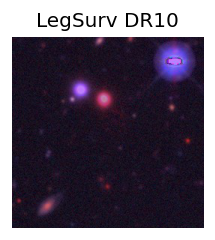
LegacySurvey: 1 sources in 3 arcsec Closest: d = 0.96 arcsec, 17.9 deg (east of north) photoz=1.38 (68% bounds 1.0, 1.67), type=REX peak abs mag = -26.47 (68% bounds -25.61, -26.98) 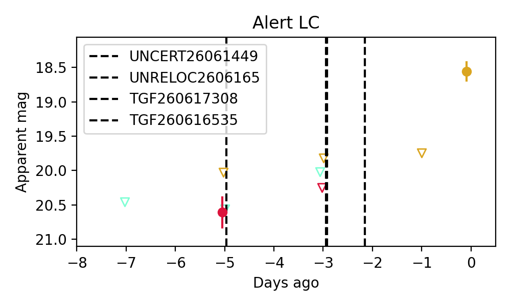
17. ZTF26abcsdfq (FBOT?) [Back to Top] [Share] [Trigger Swift] [Fritz ] [Lasair ]RA, Dec: 264.3286, 21.69351 17h37m18.87s, 21d41m36.65sGalactic (l, b): 45.37048, 25.5545 ext(g-r) = 0.078LegacySurvey: 1 sources in 3 arcsec Closest: d = 1.65 arcsec, 256.4 deg (east of north) photoz=0.34 (68% bounds 0.1, 2.75), type=PSF peak abs mag = -21.44 (68% bounds -18.46, -26.91)
18. ZTF26abcthzb (Afterglow?) [Back to Top] [Share] [Trigger Swift] [Fritz ] [Lasair ]RA, Dec: 287.38603, 5.63456 19h 9m32.65s, 5d38m4.42sGalactic (l, b): 40.01069, -1.43997 ext(g-r) = 6.538PS1: 1 source in 3 arcsec Closest: d = 5.02 arcsec photoz=0.90+/-0.09 peak abs mag = -37.87
19. ZTF26abctotm (FBOT?) [Back to Top] [Share] [Trigger Swift] [Fritz ] [Lasair ]RA, Dec: 332.00447, -3.77271 22h 8m1.07s, -3d-46m-21.77sGalactic (l, b): 56.56238, -44.56374 ext(g-r) = 0.195LegacySurvey: 1 sources in 3 arcsec Closest: d = 2.25 arcsec, 354.8 deg (east of north) photoz=0.22 (68% bounds 0.04, 1.9), type=PSF peak abs mag = -21.1 (68% bounds -17.01, -26.7)